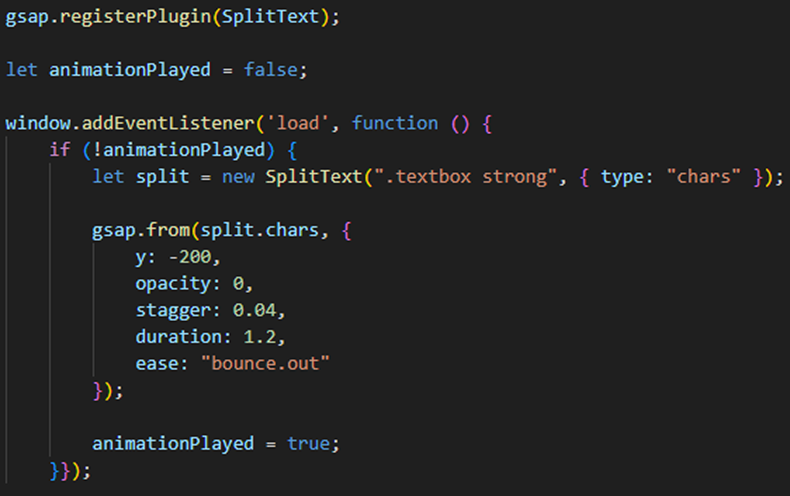

Project Workflow
01
Concept Development
- 크리에이티브 디자인 에이전시 특성 파악
- 포트폴리오 중심 웹사이트 기획
- 타겟 고객 분석 (디자인 의뢰 기업)
- 경쟁사 분석 및 차별화 포인트 도출
02
Design System
- 글래스모피즘 디자인 컨셉 수립
- 무채색 컬러 팔레트 선정
- 다크 톤 베이스 + 미니멀 3D 오브젝트 활용
- 와이어프레임 및 프로토타입 제작
03
Visual Design
- 메인 비주얼 디자인 (Figma)
- 포트폴리오 레이아웃 설계
- 반투명 효과 및 블러 처리 적용
- 반응형 디자인 가이드 작성
04
Development
- HTML/SCSS/JavaScript 구현
- GSAP SplitText 애니메이션 적용
- Swiper slide Infinity loop 적용
- 검색 기능 및 인터랙션 구현
05
Animation & Interaction
- 비주얼 슬로건 분할 애니메이션
- 이미지 페이드 인/아웃 효과
- 검색창 오버레이 효과
- 포트폴리오 슬라이드 인터랙션
06
Testing & Launch
- 크로스 브라우징 테스트
- 반응형 디자인 검증
- 애니메이션 성능 최적화
- 최종 배포 및 GitHub Pages 호스팅
Header - Search box
검색을 클릭했을 때 비주얼의 이미지가 어두워지며 검색창이 나오고, 닫을때는 이미지가 다시 밝아지며 사라지는 효과를 jQuery로 구현했습니다. fadeOut 효과를 주어 자연스럽게 사라지도록 작업했습니다.
Visual
GSAP의 SplitText를 이용하여 비주얼의 슬로건이 나눠서 떨어지도록 작업하고, Swiper slide의 Infinity Loop를 이용하여 비주얼 이미지의 불빛이 자동으로 on&off 되어보이는듯한 효과를 주었습니다.

Section1 & Section3
Swiper slide의 Infinity Loop를 이용하여 작업물이 무한 슬라이드 되도록 작업하고, 좌측의 메뉴에 글래스모피즘 요소를 기반으로 섹션 제목과 슬라이드 버튼을 배치하였습니다. 디스플레이 크기에 따라 슬라이드의 개수가 변하도록 브레이크 포인트를 지정하였습니다.


Footer
글래스모피즘 요소를 기반으로 디자인하고, 고객상담 대표번호로 바로 연결될 수 있도록 작업하였습니다.